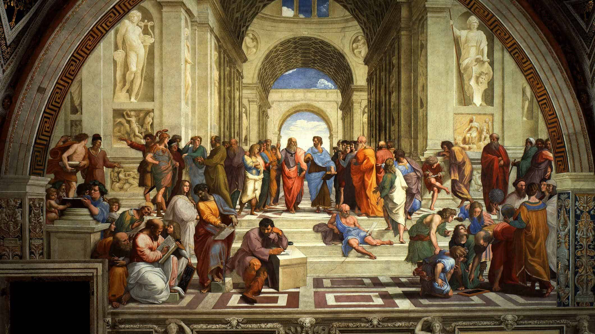

What is Classical Education?
The Classical Method
Classical education is not better because it's old. It's better because it has been tested and proven in the laboratory of time.
To understand the power and potential of Classical Education in a student’s life, it will help to know the heart and history of the classical method.
In Summary
Historically, students trained under the classical model learned the fundamentals of grammar, logic, and rhetoric, and then used their developed skills of critical thinking and reason. They studied virtue and art. They understood Truth as the foundation for knowledge and the source of wisdom. Success was measured in content of character as well as in breadth of knowledge. Learning was a style of living and not a means to an end. Educators recognized that the mind, as Plutarch, the Greek philosopher, historian, and writer, said, “is not a vessel to be filled but a fire to be kindled.”
The Learning
Classical education builds the experience of learning around the natural developmental stages of children.
The methodology of teaching is modeled after Dorothy Sayers “Lost Tools of Learning.” Within this context, education happens with the flow of childhood development, in three distinct phases known as The Trivium (which means “The Three Way Path”). When children are young, they love to memorize. It’s life-giving to them. When they grow to their middle school years, they argue and debate. They thrive within the process of discovery. As they mature into young adults, they want to determine their course and plan their movements. The Trivium becomes the framework for learning within classical education.
The Trivium
1. Grammar Stage: K-4th Grade
The first stage of the trivium is Grammar and applies to students from Kindergarten through 5th grade. Children at this age love repetition and routine. By making this a part of their daily lives, the foundations for learning are established. They develop the disciplines of learning (times tables, fundamentals of reading and grammar, etc.) through repetition, song, and play.
2. Logic Stage: 5th-8th Grade
In this stage, the structure and fundamentals learned during the Grammar stage are applied so that students can begin to understand the concepts. Students at this age (middle school years) are prone to debate and arguments more than the early years because of their naturally developing curiosity. Through the Logic phase, they develop the ability to distinguish between good thinking and bad thinking. The disciplines of discernment, reason, and logic are taught within a richly discussion-driven environment.
3. Rhetoric Stage: 9th-12th Grade
The final stage of classical education is where all of learning comes together. It is called Rhetoric. It is within this stage that students learn to synthesize information to form and articulate their own opinions—opinions that are built upon the rules of learning (Grammar), with sound reasoning (Logic), and within the framework of Absolute Truth.
The Result
As we have studied successful classical schools, it is clear their graduates demonstrate preparedness for college and the academic and philosophical challenges that come with it.
The statistics prove it.
They can speak, write, think, debate, and lead.
Because they’ve learned grammar, logic, and rhetoric, they can identify what is True and how to talk about it and live it out.
Classical education is not education just for utility's sake, but to prepare students to live a life of joy and goodness.
CCA graduates will create…build…lead…serve…and inspire.